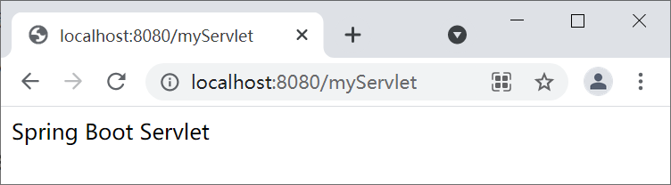

Spring Boot注册Web原生组件（Servlet、Filter、Listener）
由于 Spring Boot 默认以 Jar 包方式部署的，默认没有 web.xml，因此无法再像以前一样通过 web.xml 配置来使用 Servlet 、Filter、Listener，但 Spring Boot 提供了 2 种方式来注册这些 Web 原生组件。
这些注解可直接标注在对应组件上，它们与在 web.xml 中的配置意义相同。每个注解都具有与 web.xml 对应的属性，可直接配置，省去了配置 web.xml 的繁琐。
想要在 SpringBoot 中注册这些原生 Web 组件，可以使用 @ServletComponentScan 注解实现，该注解可以扫描标记 @WebServlet、@WebFilter 和 @WebListener 三个注解的组件类，并将它们注册到容器中。
2. 使用 @WebFilter 注解声明一个自定义的 Filter，代码如下。
3. 使用 @WebListener 注解声明一个自定义的 Listener，代码如下。
4. 在启动类上使用 @ServletComponentScan 注解，扫描以上刚刚声明的 Servlet、Filter 和 Listener，并将它们注册到容器中使用，代码如下。
5. 启动 Spring Boot，控制台日志出入如下。
RegistrationBean 是个抽象类，负责将组件注册到 Servlet 容器中，Spring 提供了三个它的实现类，分别用来注册 Servlet、Filter 和 Listener。
我们可以在配置类中，使用 @Bean 注解将 ServletRegistrationBean、FilterRegistrationBean 和 ServletListenerRegistrationBean 添加 Spring 容器中，并通过它们将我们自定义的 Servlet、Filter 和 Listener 组件注册到容器中使用。
2. 创建自定义的 Filter，代码如下。
3. 创建自定义的 Listener，代码如下。
5. 启动 Spring Boot，控制台日志出入如下。
- 通过组件扫描注册
- 使用 RegistrationBean 注册
通过组件扫描注册
Servlet 3.0 提供了以下 3 个注解：- @WebServlet：用于声明一个 Servlet；
- @WebFilter：用于声明一个 Filter；
- @WebListener：用于声明一个 Listener。
这些注解可直接标注在对应组件上，它们与在 web.xml 中的配置意义相同。每个注解都具有与 web.xml 对应的属性，可直接配置，省去了配置 web.xml 的繁琐。
想要在 SpringBoot 中注册这些原生 Web 组件，可以使用 @ServletComponentScan 注解实现，该注解可以扫描标记 @WebServlet、@WebFilter 和 @WebListener 三个注解的组件类，并将它们注册到容器中。
注意：@ServletComponentScan 注解只能标记在启动类或配置类上。
示例
1. 使用 @WebServlet 注解声明一个自定义的 Servlet，代码如下。
package net.biancheng.www.servlet;
import javax.servlet.ServletException;
import javax.servlet.annotation.WebServlet;
import javax.servlet.http.HttpServlet;
import javax.servlet.http.HttpServletRequest;
import javax.servlet.http.HttpServletResponse;
import java.io.IOException;
import java.io.PrintWriter;
//使用 @WebServlet 注解声明一个 Servlet
@WebServlet(name = "myServlet", urlPatterns = "/myServlet")
public class MyServlet extends HttpServlet {
@Override
protected void doGet(HttpServletRequest req, HttpServletResponse resp) throws ServletException, IOException {
doPost(req, resp);
}
@Override
protected void doPost(HttpServletRequest req, HttpServletResponse resp) throws ServletException, IOException {
resp.setContentType("text/html;charset=UTF-8");
PrintWriter writer = resp.getWriter();
writer.write("Spring Boot Servlet");
writer.close();
}
}
2. 使用 @WebFilter 注解声明一个自定义的 Filter，代码如下。
package net.biancheng.www.filter;
import javax.servlet.*;
import javax.servlet.annotation.WebFilter;
import java.io.IOException;
//使用 @WebFilter注解声明一个自定义的 Filter
@WebFilter(urlPatterns = ("/myServlet"))
public class MyFiler implements Filter {
@Override
public void init(FilterConfig filterConfig) throws ServletException {
System.out.println("MyFiler 初始化");
}
@Override
public void doFilter(ServletRequest request, ServletResponse response, FilterChain chain) throws IOException, ServletException {
System.out.println("MyFiler doFilter");
chain.doFilter(request, response);
}
@Override
public void destroy() {
System.out.println("MyFiler 销毁");
}
}
3. 使用 @WebListener 注解声明一个自定义的 Listener，代码如下。
package net.biancheng.www.Listener;
import javax.servlet.ServletContextEvent;
import javax.servlet.ServletContextListener;
import javax.servlet.annotation.WebListener;
//使用 @WebListener 注解声明一个自定义的 Listener
@WebListener
public class MyListener implements ServletContextListener {
@Override
public void contextInitialized(ServletContextEvent sce) {
System.out.println("MyListener 监听到 ServletContext 初始化");
}
@Override
public void contextDestroyed(ServletContextEvent sce) {
System.out.println("MyListener 监听到 ServletContext 销毁");
}
}
4. 在启动类上使用 @ServletComponentScan 注解，扫描以上刚刚声明的 Servlet、Filter 和 Listener，并将它们注册到容器中使用，代码如下。
package net.biancheng.www;
import org.springframework.boot.SpringApplication;
import org.springframework.boot.autoconfigure.SpringBootApplication;
import org.springframework.boot.web.servlet.ServletComponentScan;
@ServletComponentScan
@SpringBootApplication
public class SpringBootServletApplication {
public static void main(String[] args) {
SpringApplication.run(SpringBootServletApplication.class, args);
}
}
5. 启动 Spring Boot，控制台日志出入如下。
. ____ _ __ _ _ /\\ / ___'_ __ _ _(_)_ __ __ _ \ \ \ \ ( ( )\___ | '_ | '_| | '_ \/ _` | \ \ \ \ \\/ ___)| |_)| | | | | || (_| | ) ) ) ) ' |____| .__|_| |_|_| |_\__, | / / / / =========|_|==============|___/=/_/_/_/ :: Spring Boot :: (v2.5.1) 2021-06-23 14:07:04.202 INFO 10200 --- [ main] n.b.www.SpringBootServletApplication : Starting SpringBootServletApplication using Java 1.8.0_131 on LAPTOP-C67MRMAG with PID 10200 (D:\spring-boot-servlet\target\classes started by 79330 in D:\spring-boot-servlet) 2021-06-23 14:07:04.205 INFO 10200 --- [ main] n.b.www.SpringBootServletApplication : No active profile set, falling back to default profiles: default 2021-06-23 14:07:05.169 INFO 10200 --- [ main] o.s.b.w.embedded.tomcat.TomcatWebServer : Tomcat initialized with port(s): 8080 (http) 2021-06-23 14:07:05.180 INFO 10200 --- [ main] o.apache.catalina.core.StandardService : Starting service [Tomcat] 2021-06-23 14:07:05.180 INFO 10200 --- [ main] org.apache.catalina.core.StandardEngine : Starting Servlet engine: [Apache Tomcat/9.0.46] 2021-06-23 14:07:05.245 INFO 10200 --- [ main] o.a.c.c.C.[Tomcat].[localhost].[/] : Initializing Spring embedded WebApplicationContext 2021-06-23 14:07:05.245 INFO 10200 --- [ main] w.s.c.ServletWebServerApplicationContext : Root WebApplicationContext: initialization completed in 984 ms MyListener 监听到 ServletContext 初始化 MyFiler 初始化 2021-06-23 14:07:05.543 INFO 10200 --- [ main] o.s.b.w.embedded.tomcat.TomcatWebServer : Tomcat started on port(s): 8080 (http) with context path '' 2021-06-23 14:07:05.550 INFO 10200 --- [ main] n.b.www.SpringBootServletApplication : Started SpringBootServletApplication in 1.853 seconds (JVM running for 2.764) MyFiler doFilter
由以上日志输出可以看出，自定义的过滤器 Filter 和 监听器 Listener 都已经生效。
6. 浏览器访问“http://localhost:8080/myServlet”，结果如下。

图1：Spring Boot 注册 Servlet
由上图可知，自定义的 Servlet 也已经生效了。
使用 RegistrationBean 注册
我们还可以在配置类中使用 RegistrationBean 来注册原生 Web 组件，不过这种方式相较于注解方式要繁琐一些。使用这种方式注册的原生 Web 组件，不再需要使用 @WebServlet 、@WebListener 和 @WebListener 等注解。RegistrationBean 是个抽象类，负责将组件注册到 Servlet 容器中，Spring 提供了三个它的实现类，分别用来注册 Servlet、Filter 和 Listener。
- ServletRegistrationBean：Servlet 的注册类
- FilterRegistrationBean：Filter 的注册类
- ServletListenerRegistrationBean：Listener 的注册类
我们可以在配置类中，使用 @Bean 注解将 ServletRegistrationBean、FilterRegistrationBean 和 ServletListenerRegistrationBean 添加 Spring 容器中，并通过它们将我们自定义的 Servlet、Filter 和 Listener 组件注册到容器中使用。
示例 2
1. 创建自定义 Servlet，代码如下。
package net.biancheng.www.servlet;
import javax.servlet.ServletException;
import javax.servlet.http.HttpServlet;
import javax.servlet.http.HttpServletRequest;
import javax.servlet.http.HttpServletResponse;
import java.io.IOException;
import java.io.PrintWriter;
public class MyServlet extends HttpServlet {
@Override
protected void doGet(HttpServletRequest req, HttpServletResponse resp) throws ServletException, IOException {
doPost(req, resp);
}
@Override
protected void doPost(HttpServletRequest req, HttpServletResponse resp) throws ServletException, IOException {
resp.setContentType("text/html;charset=UTF-8");
PrintWriter writer = resp.getWriter();
writer.write("Spring Boot Servlet");
writer.close();
}
}
2. 创建自定义的 Filter，代码如下。
package net.biancheng.www.filter;
import javax.servlet.*;
import java.io.IOException;
public class MyFiler implements Filter {
@Override
public void init(FilterConfig filterConfig) throws ServletException {
System.out.println("MyFiler 初始化");
}
@Override
public void doFilter(ServletRequest request, ServletResponse response, FilterChain chain) throws IOException, ServletException {
System.out.println("MyFiler doFilter");
chain.doFilter(request, response);
}
@Override
public void destroy() {
System.out.println("MyFiler 销毁");
}
}
3. 创建自定义的 Listener，代码如下。
package net.biancheng.www.Listener;
import javax.servlet.ServletContextEvent;
import javax.servlet.ServletContextListener;
//监听 ServletContext 的初始化和销毁过程
public class MyListener implements ServletContextListener {
@Override
public void contextInitialized(ServletContextEvent sce) {
System.out.println("MyListener 监听到 ServletContext 初始化");
}
@Override
public void contextDestroyed(ServletContextEvent sce) {
System.out.println("MyListener 监听到 ServletContext 销毁");
}
}
4. 创建一个配置类 MyConfig，使用 @Bean 注解将 ServletRegistrationBean、FilterRegistrationBean 和 ServletListenerRegistrationBean 添加到 Spring 容器中，并分别使用它们注册我们自定义的 Servlet、Filter 和 Listener，示例代码如下。
package net.biancheng.www.config;
import net.biancheng.www.Listener.MyListener;
import net.biancheng.www.filter.MyFiler;
import net.biancheng.www.servlet.MyServlet;
import org.springframework.boot.web.servlet.FilterRegistrationBean;
import org.springframework.boot.web.servlet.ServletListenerRegistrationBean;
import org.springframework.boot.web.servlet.ServletRegistrationBean;
import org.springframework.context.annotation.Bean;
import org.springframework.context.annotation.Configuration;
import java.util.Arrays;
@Configuration
public class MyConfig {
/**
* 注册 servlet
* @return
*/
@Bean
public ServletRegistrationBean servletRegistrationBean() {
MyServlet myServlet = new MyServlet();
return new ServletRegistrationBean(myServlet, "/myServlet");
}
/**
* 注册过滤器
* @return
*/
@Bean
public FilterRegistrationBean filterRegistrationBean() {
MyFiler myFiler = new MyFiler();
FilterRegistrationBean filterRegistrationBean = new FilterRegistrationBean(myFiler);
//注册该过滤器需要过滤的 url
filterRegistrationBean.setUrlPatterns(Arrays.asList("/myServlet"));
return filterRegistrationBean;
}
/**
* 注册监听器
* @return
*/
@Bean
public ServletListenerRegistrationBean servletListenerRegistrationBean() {
MyListener myListener = new MyListener();
return new ServletListenerRegistrationBean(myListener);
}
}
5. 启动 Spring Boot，控制台日志出入如下。
. ____ _ __ _ _ /\\ / ___'_ __ _ _(_)_ __ __ _ \ \ \ \ ( ( )\___ | '_ | '_| | '_ \/ _` | \ \ \ \ \\/ ___)| |_)| | | | | || (_| | ) ) ) ) ' |____| .__|_| |_|_| |_\__, | / / / / =========|_|==============|___/=/_/_/_/ :: Spring Boot :: (v2.5.1) 2021-06-23 14:39:16.338 INFO 8684 --- [ main] n.b.www.SpringBootServletApplication : Starting SpringBootServletApplication using Java 1.8.0_131 on LAPTOP-C67MRMAG with PID 8684 (D:\spring-boot-servlet\target\classes started by 79330 in D:\spring-boot-servlet) 2021-06-23 14:39:16.340 INFO 8684 --- [ main] n.b.www.SpringBootServletApplication : No active profile set, falling back to default profiles: default 2021-06-23 14:39:17.059 INFO 8684 --- [ main] o.s.b.w.embedded.tomcat.TomcatWebServer : Tomcat initialized with port(s): 8080 (http) 2021-06-23 14:39:17.069 INFO 8684 --- [ main] o.apache.catalina.core.StandardService : Starting service [Tomcat] 2021-06-23 14:39:17.070 INFO 8684 --- [ main] org.apache.catalina.core.StandardEngine : Starting Servlet engine: [Apache Tomcat/9.0.46] 2021-06-23 14:39:17.138 INFO 8684 --- [ main] o.a.c.c.C.[Tomcat].[localhost].[/] : Initializing Spring embedded WebApplicationContext 2021-06-23 14:39:17.138 INFO 8684 --- [ main] w.s.c.ServletWebServerApplicationContext : Root WebApplicationContext: initialization completed in 766 ms MyListener 监听到 ServletContext 初始化 MyFiler 初始化 2021-06-23 14:39:17.390 INFO 8684 --- [ main] o.s.b.w.embedded.tomcat.TomcatWebServer : Tomcat started on port(s): 8080 (http) with context path '' 2021-06-23 14:39:17.396 INFO 8684 --- [ main] n.b.www.SpringBootServletApplication : Started SpringBootServletApplication in 1.379 seconds (JVM running for 2.19)
由以上日志输出可以看出，自定义的过滤器 Filter 和监听器 Listener 都已经生效。
6. 浏览器访问“http://localhost:8080/myServlet”，结果如下图。
图1：Spring Boot 注册 Servlet
由上图可知，自定义的 Servlet 也已经被注册生效了。
关注公众号「站长严长生」，在手机上阅读所有教程，随时随地都能学习。内含一款搜索神器，免费下载全网书籍和视频。

微信扫码关注公众号